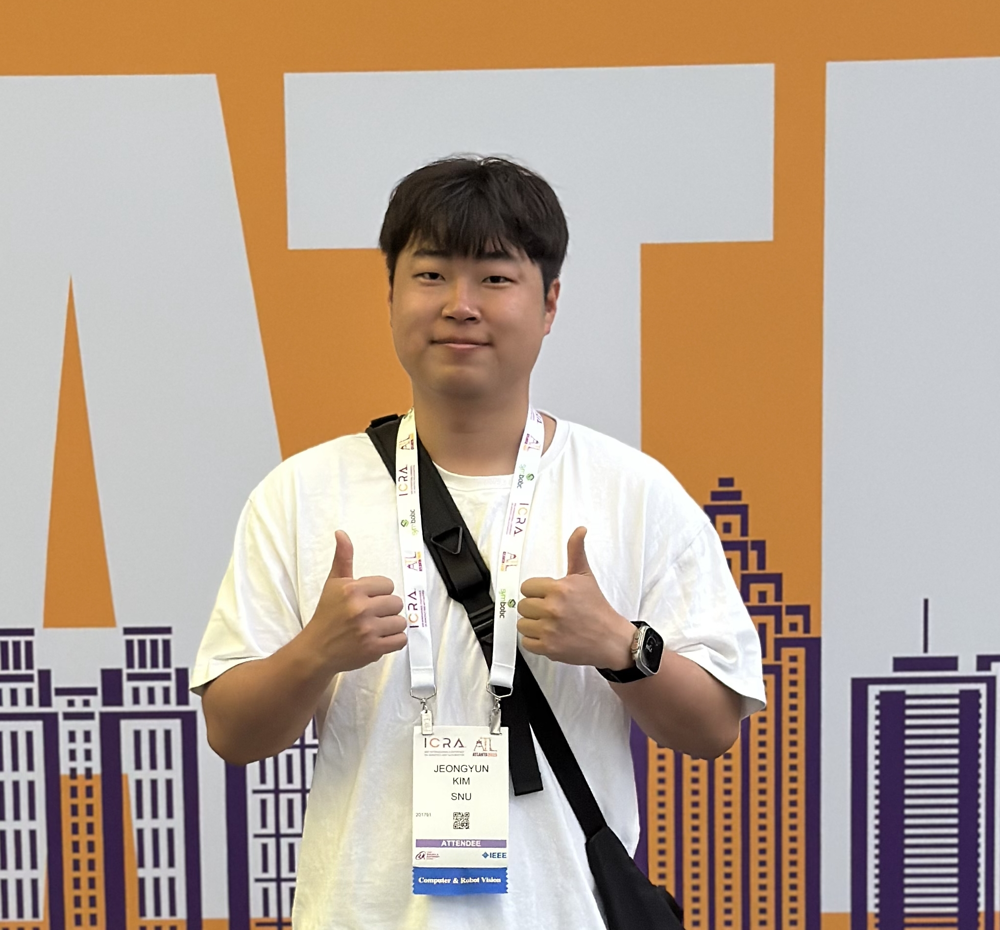

|
I am Ph.D. student in Mechanical Engineering at the RPM Robotics lab, Seoul National University, advised by Prof. Ayoung Kim. My research interests lie in perception and depth reconstruction for transparent object manipulation, with a particular focus on vision-based neural volumetric synthesis techniques. Email / Google Scholar / Github / LinkedIn |
 |
{kind=link}
|
|

|
TRansPose: Large-scale Multispectral Dataset for Transparent object
Jeongyun Kim, Myung-Hwan Jeon, Sangwoo Jung, Wooseong Yang, Minwoo Jung, Jaeho Shin and Ayoung Kim The International Journal of Robotics Research (IJRR), 2024 [arXiv] [dataset site] |

|
TranSplat: Surface Embedding-guided 3D Gaussian Splatting for Transparent Object Manipulation
Jeongyun Kim, Jeongho Noh, DongGuw Lee and Ayoung Kim IEEE International Conference on Robotics and Automation (ICRA), 2025 [arXiv] [video] [code] |

|
TranD: 2D Gaussian Splatting-based Sparse-view Transparent Object Depth Reconstruction via Physics Simulation for Scene Update
Jeongyun Kim, Seunghoon Jeong, Giseop Kim, Myung-Hwan Jeon, Eunji Jun and Ayoung Kim IEEE/CVF International Conference on Computer Vision (ICCV), 2025 Code and arXiv are comming soon! |